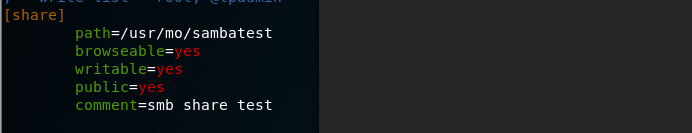
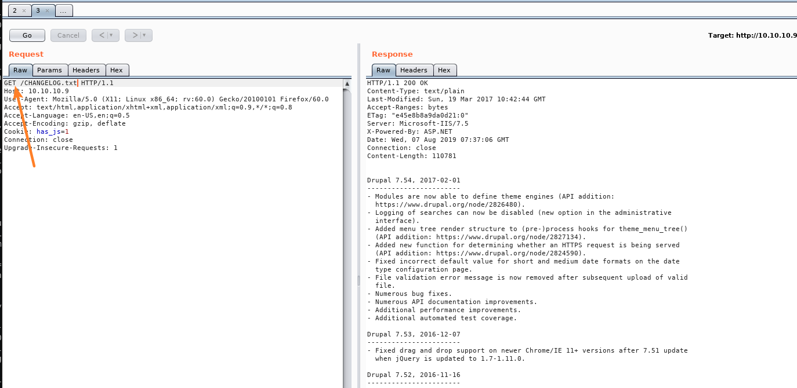

0x00 基本信息收集
扫描端口信息：
访问80web页面：
发现页面为drupal框架
目录扫描结果如下：
进一步根据nmap扫描结果，在其CHANGELOG.TXT文件内发现版本信息：
searchsploit查找该框架是否存在可利用漏洞：
在结果中，找到可利用的RCE漏洞，下面分别对其中的两个漏洞进行分析利用
0x01 Drupal 7.x Module Services - Remote Code Execution
修改php文件部分内容：
然后执行程序：
得到两个json文件，其文件内容如下：
此时，我们已经在目标机器内写入一个mo.php文件，且能够执行cmd：
目标靶机为windows Server系列。
在本地机器建立smb共享，将静态编译的nc64.exe进行共享，借此获得user shell
samba的配置文件和相关过程如下：

0x02 Drupal < 8.3.9 / < 8.4.6 / < 8.5.1 - ‘Drupalgeddon2’ Remote Code Execution
对于该漏洞，可直接找到ruby利用脚本，运行如下：
没有找到CHANGELOG.txt文件，尝试查找原因：
修改ruby利用脚本的proxy设置，再次运行脚本，利用burpsuite截获漏洞利用过程的数据包：
发现请求changelog.txt文件是POST请求，而正常访问时为GET方式：

因此，利用burp截获并修改POST为GET，成功获取shell：
此时，如脚本所提示的，拿到的是一个ugly shell。
这里可以进一步应用nishang powershell
首先拉取其Invoke-PowerShellTcp.ps1脚本到本地，然后根据其提示在脚本最后加入脚本调用，随后本地开启小型web服务和nc端口监听，利用已有的ugly shell执行脚本的下载和执行操作，拿到shell:
0x03 privilege escalation
根据获得的systeminfo系统信息，可利用MS15-051来实现提权操作
相关信息可参考https://github.com/SecWiki/windows-kernel-exploits/tree/master/MS15-051
依然利用上文中的思想，提权的二进制程序进行smb共享，然后实现shell提权：
拿到flag: